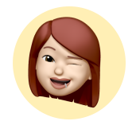
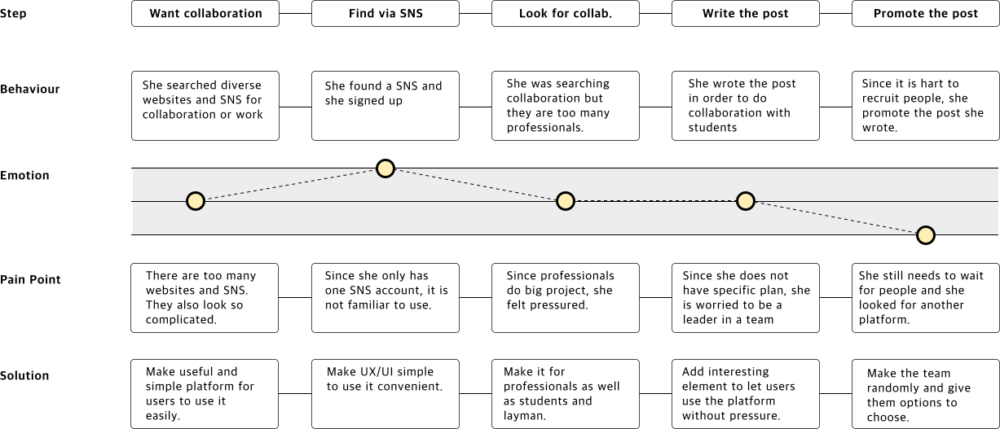

Exquis
How to kickstart Gen Z’s Career?
Team project at school
Role
Research
Ideation
Product Design
Ideation
Product Design
Project Time
4 weeks
Overview
After Covid 19 occurred, many people have been facing and suffering from various problems. For Gen Z, they are facing and worried about unemployment, social interests and isolations. Exquis is a social networking service that Gen Z ranging from students to professionals can have new strong connections, explore, get inspiration, and collaborate with interesting feature only in Exquis in order to kickstart their career.
Define
Brief
This project is team project with each student in the different course. We were given the challenge to develop the project relating to Gen Z. Many Gen Z are now facing many problems such as inequality, unemployment, social interests and isolation. During such a difficult situation as the pandemic that we are all facing, we thought that networking app is needed for young creators to share their creative works and collaborate with users.
Approach
We firstly approached this project from researching that GenZ have faced. There were many problems but we focused on the anxiety that Gen Z could feel from unemployment and isolation by the pandemic. After that, we communicated and decided what product were we going to make in order to deliver the purpose well to our users. Before doing this project, we attended the session about collaboration and teamwork. We learned how the collaboration and teamwork is important.
Research
Questionnaire
I surveyed 30 people of Gen Z creators/artists/art students in order to find out social networking service use for art works.
- Over 65% use networking app for their art works and projects
- Usually use Instagram, Pinterest and Facebook for inspiration, communication and references
- Almost 70% post their works on Networking apps
- They want easy instrunction on the app
- Most don’t want to link their personal accounts to work accounts. It means they need separate space to post and share their works and projects.
- Usually use Instagram, Pinterest and Facebook for inspiration, communication and references
- Almost 70% post their works on Networking apps
- They want easy instrunction on the app
- Most don’t want to link their personal accounts to work accounts. It means they need separate space to post and share their works and projects.
“I like suggestion function on SNS that shows similar posts based on mine or what I like.”
“However, it shows same posts a lot even though I want to see and experience diverse posts.”
“SNS is easy to upload my works but difficult to edit or reorganise feeds, it requires us to re-upload.”
“SNS inspires artists, but we usually feel unsafe and there are too many ads and SNS is turning into marketplace.”
“Some SNS for artists look like just for older professional. So it is uneasy to access for unprofessional people like students”
“I want to be connected to diverse people in a more comfortable way, not so forced.”
*Answers are based on questionnaire and interviews

‘‘How can people connect to diverse people in a comfortable way?’
‘How can Gen Z feel comfortable to kickstart their career?’
‘How can Gen Z learn and experience diversity from SNS?’
Insight
Many Gen Z creators/artists/art students use networking services while they do projects, collaborate with others, work, or even look for a job. While doing research, we found that many artists are desiring for communication from their isolated circumstances in pandemic. There are many social networking platforms, however some are quite inaccessible for Gen Z, mostly younger artists, to get inspiration or communicate. They need more young but professional images of social networking services, however they do not want the app like Tiktok which is for like influencers and has many ads.
UX Challenge
Social networking service would focus on three points which are communication, collaboration and career. It aims Gen Z to use easily, feel comfortable and not seem for order professional. Therefore, Gen Z would be able to communicate and collaborate with many diverse artists around the worlds and also they can get healthy and successful career.
Research Methods : Primary research, Secondary research, 1:1 Interviews, Competitors Research, Stakeholder Map


Analysis
Persona
BIO
Mario is an art student studying graphic design. He loves his universities friends but he feel difficult to make new connections since he is introvert. He is into participate in many art activities in his art school.

BIO
Helen is an art student and UX design freelancer. She is 3rd year students and has done some projects with some artists who are art students as her. She was going to participate in making the app with her friends/team.
Name
Mario
Name
Helen
Age
21
Age
24
Occupation
Art Student
Occupation
Art Student, Freelancer
Brands
Instagram, Facebook, Pinterest
Brands
Instagram, LinkedIn
Goal
He wants to participate in art activities more in order to experience diverse art and make more personal connections.
Goal
She wants to prepare and improve her career before her graduation.
Frustration
Due to covid 19 and school closure, it is hard to participate in school activities.
Frustration
It is hard to do face-to-face work with her team because her team went back to their own countries after Covid 19.
Journey Map
“After pandemic occurs, Mario wants to go out with his universities friends but it is difficult to meet them. So he is going to participate in art activities since he made his connections with art students through school activities. However, due to school closure, most activities are closed or fully booked. His friend recommended SNS but he is worries that he is introvert person to make new connection with new people whom have no relation with school.”
“Helen is a 3rd year student. One of her asian friend recommended her to collaborate and she has worked in her friend’s team, so she sometimes work as a freelancer. However, her friends went back to their own countries and they cannot work together because of Covid 19 and time difference. Helen wants to get some work/job in order to improve her career and portfolio.”

Core Needs - Solution - Design
01
Want to show not too much information, especially their photo.
Provide users their own avatar randomly and users can choose anything they want.
02
Want connect with people in more natural and comfortable way.
Each user will match with diverse users through the game named Exquisite Cadaver.
03
Want to find someone who has specific concept/design/art/skills for collaborations and connections.
Users can explore and find people or images with upload image option finding specific person/concepts/images. Then AI will find the best people and posts they need.
04
Do every steps from search to collaboration/work and payment in one platform.
Users can find their new connections’ information and do enquiry to them for their work or pay. After that, they can book an appointment and pay on the app.

05
Communicate with collaborators by not only chat but also calls/video.
Users can call and send message on the app. And they can check how many hours they called.
Design
Logo and concept
Our team was inspired by an exquisite corpse, also known as exquisite cadaver, that is a method by which a collection of words or images is collectively assembled. We thought it is quite similar to our concept, collaborating and sharing their works.
We experimented with the various name of our product and logo design such as Xquis, exquisi and exquis. We chose the name of the app as exquis, and our logo was inspired by the company named best workspaces which has animated logo. We made our logo looks like folding paper since, in the game(exquisite corpse), the paper needs to be folded to conceal his or her contribution for the next player. So we made two types of the logo which were static and animated.

You can see the video of Exquis
Click the image and enjoy!